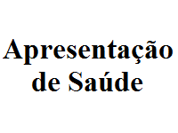
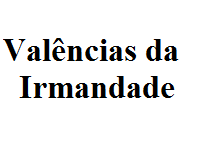

Publicações Médicas
Publicações Médicas

Dr.Pedro Rebelo
Azia, ardor, digestão difícil e sensação de regurgitação são alguns dos sintomas do refluxo gastroesofágico, que se caracteriza por um retrocesso de sucos digestivos do estômago para o esófago. A mucosa desta zona, mais sensível, não tolera estes sucos mais ácidos, originando assim as diversas queixas.
Na transição do esófago para o estômago, existe uma válvula que permite a passagem dos alimentos e impede que estes “voltem para trás”. Se esta válvula funcionar mal e não conseguir fechar devidamente, pode permitir a “subida” dos ácidos do estômago. Trata-se de uma situação bastante frequente: a prevalência de sintomas da doença de refluxo gastroesofágico (DR GE), no mundo ocidental, situa-se entre 12 e 54%.
Dr. António Fonseca
Quando o número de evacuações é inferior a três vezes por semana, é sinal de obstipação. Ela caracteriza-se por evacuações incómodas, por emissão de fezes duras, difíceis de expulsar e pode existir uma sensação persistente de mal-estar e desconforto, podendo haver a necessidade de recorrer a medicamentos para ajudar à evacuação. É de registar que, na grande maioria dos casos, esta situação se deve a erros habituais no estilo de vida, como sejam a fraca ingestão de alimentos ricos em fibras, a fraca ingestão de líquidos, a falta de exercício físico e (surpreenda-se, leitor) o abuso de laxantes.
Dr. João Maia
Quase todos os portugueses adultos e mais de 50% da população mundial tem gastrite crónica causada pelo Helicobacter pylori. Esta gastrite crónica causada pelo H. pylori, raras vezes é causa de sintomas ou justifica tratamento. Só nos últimos 20 anos (depois da descoberta do Helicobacter pylori) compreendemos melhor porque é que a maior parte da humanidade tem gastrite crónica e que a gastrite crónica é geralmente assintomática.
Ainda hoje, com frequência, as pessoas atribuem as queixas do estômago à sua gastrite. Era assim que se pensava há 30 anos atrás, mas hoje sabemos que isso não é verdade.
Saúde e Valências da Irmandade
Saúde e Valências da Irmandade

Apresentação da Área da Saúde
A Santa Casa da Misericórdia de Leiria, dando continuidade à sua tradição secular de acompanhar as necessidades da sociedade em geral, desenvolveu recentemente uma nova área de apoio na prestação de cuidados de saúde.
É neste contexto que surge o Hospital D. Manuel de Aguiar (HDMA), que oferece aos seus utentes uma unidade moderna e tecnologicamente apetrechada, apta para dar uma resposta profissional e competente nas suas diversas áreas de intervenção.

Restantes Valências da Irmandade
Todos os irmãos são detentores de direitos, nomeadamente assistir, participar e votar nas reuniões da Assembleia Geral; serem eleitos para os Corpos Sociais; requererem a convocação extraordinária da Assembleia Geral, Mesa Administrativa e Conselho Fiscal; visitar, gratuitamente, as instalações da Santa Casa da Misericórdia/Hospital D. Manuel de Aguiar; realizar, gratuitamente, exames em situações carenciados devidamente comprovadas; participar, gratuitamente em programa de Piscina, 2 vezes por semana, durante um mês; e ainda poderem integrar programas de Rastreio do Cancro do Colo do Útero e do Cancro da Próstata.
Todos os irmãos são obrigados a pagar anualmente o valor respectiva quota aprovado em Assembleia Geral; desempenhar com zelo e dedicação os cargos para que foram eleitos para os Corpos Sociais; comparecer em actos solenes para representarem a Irmandade; colaborar no progresso e desenvolvimento da Santa Casa da Misericórdia de Leiria; propor à Mesa Administrativa novos irmãos ou que se tornem benfeitores da Irmandade.